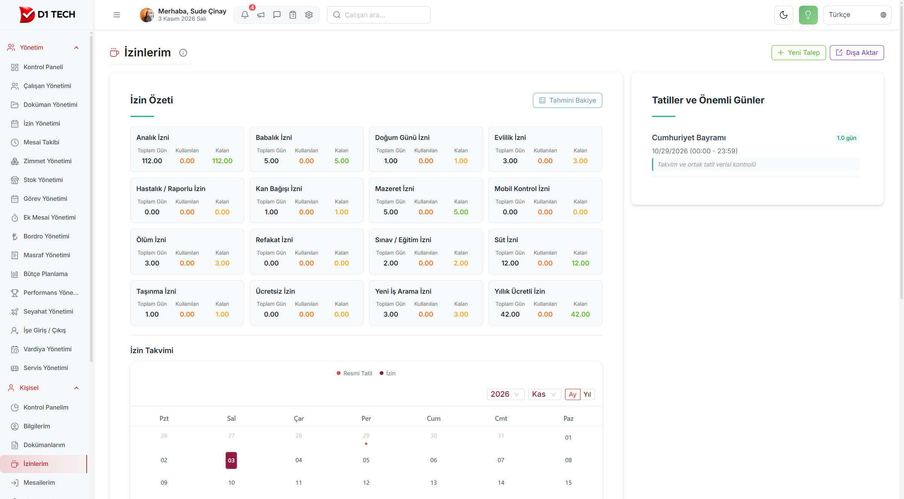
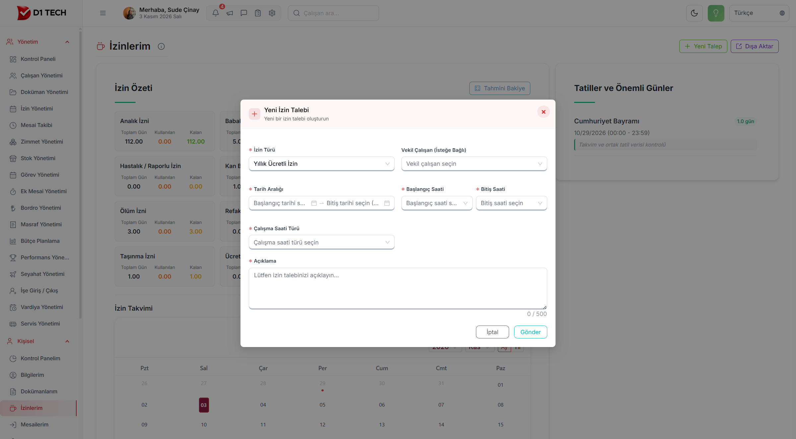
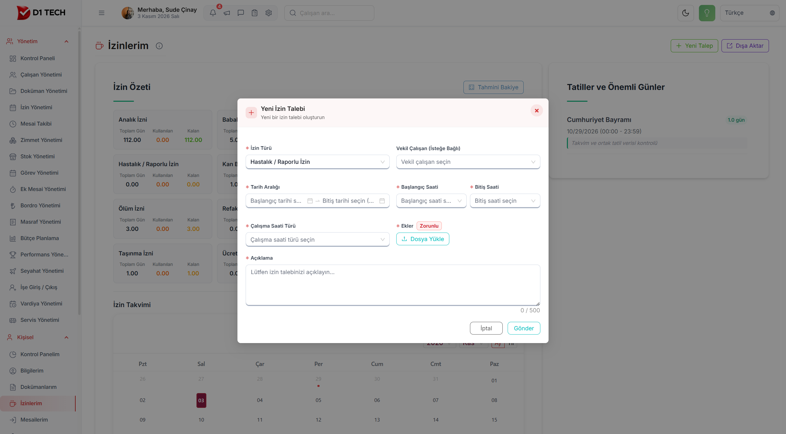
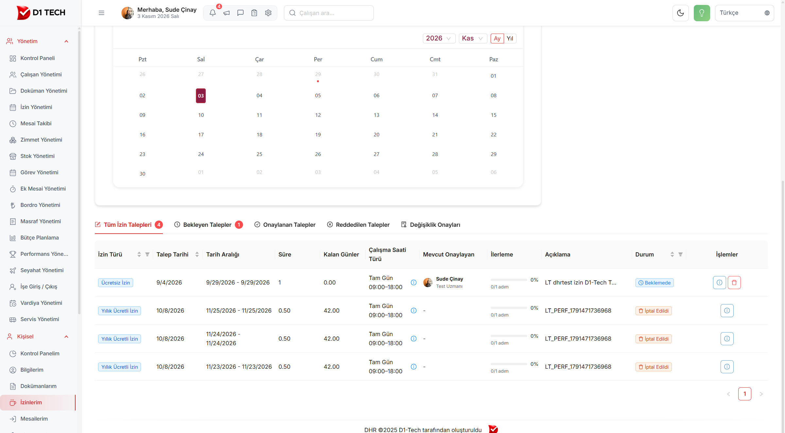
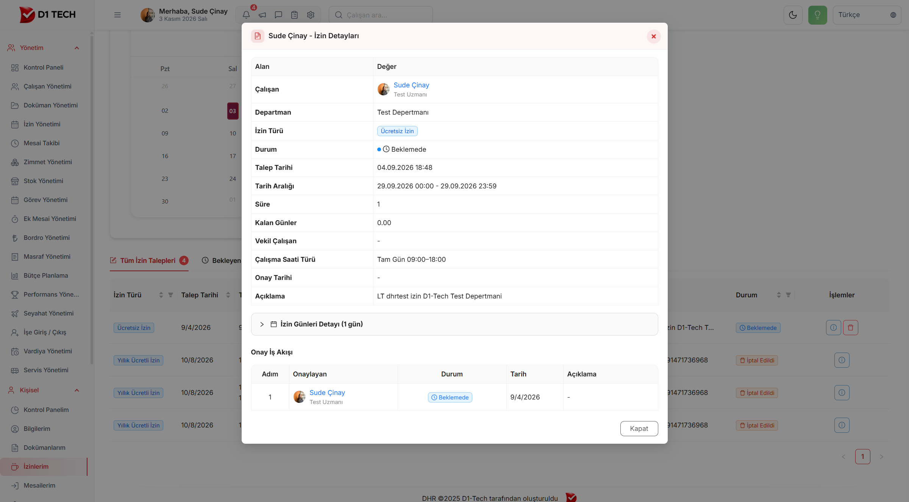
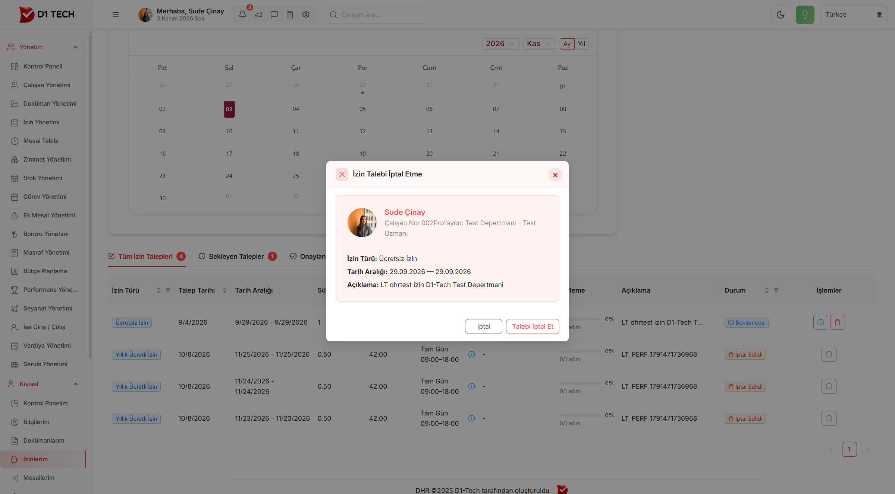
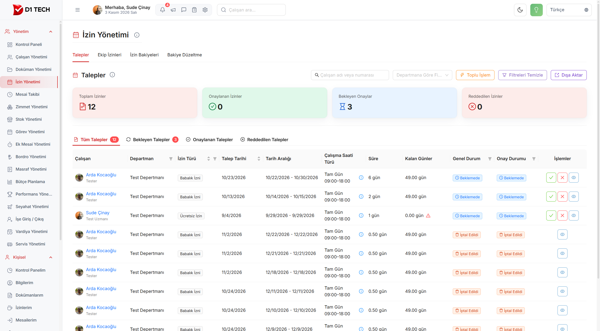
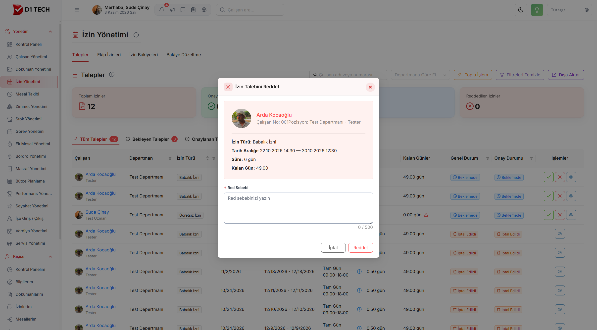

Bu kitapçık, iznin nasıl istendiğini, nasıl onaylandığını ve nasıl reddedildiğini kolayca anlatmak için hazırlandı.
İki ayrı yer vardır. Kendi izninizi Kişisel → İzinlerim ekranından istersiniz. Başkasının iznini Yönetim → İzin Yönetimi ekranından onaylar veya reddedersiniz.
Çalışan izin ister→Talep beklemede kalır→Yönetici onaylar veya reddeder
Onaylanan ücretli izin, kişinin o izinden kalan gününden düşer. Reddedilen izin ve geri çekilen izin gün düşürmez.
Ücretsiz iznin yanında çoğu zaman 0 görünür. Bu bir arıza değildir. Ücretsiz izin, yıllık izinden gün yemez.
Soldaki menüde İzin Yönetimi yoksa sizin işiniz yalnız kendi izninizi istemektir. Onay düğmesi, talebi size düşen yöneticiye çıkar.
2. Kendi izninizi istemek
Ekrana e-posta ve şifrenizle girin.
Solda Kişisel yazan yeri açın.
İzinlerim satırına tıklayın.

İzinlerim. Kartlarda kaç gün hakkınız olduğu yazar. Sağ üstte Yeni Talep düğmesi vardır.
Önce kalan gününüze bakın
Her kart bir izin türüdür. Kartta üç sayı görürsünüz:
Toplam Gün: size tanımlı hak
Kullanılan: şimdiye kadar kullandığınız
Kalan: hâlâ kullanabileceğiniz gün. Yeşil olan budur
Kartta görünen her tür, izin isterken listede çıkmayabilir. Listede yalnız sizin kullanabileceğiniz türler vardır.
Tahmini Bakiye düğmesi, ileride bir günde yaklaşık kaç gününüz kalacağını söyler. Bu kesin sayı değildir. İşiniz veya izin kuralları değişirse sonuç da değişir.
Talebi doldurmak
Sağ üstteki yeşil Yeni Talep düğmesine basın.
İzin Türü kutusundan iznin adını seçin. Yıllık ücretli izin, mazeret, evlilik, hastalık gibi.
Vekil Çalışan boş kalabilir. İzninizde işinize bakacak biri varsa onu seçin.
Tarih Aralığı kutusuna tıklayın. Açılan takvimden ilk günü ve son günü seçin. Tek gün istiyorsanız iki tarafa da aynı günü seçin.
Başlangıç Saati iznin başladığı saattir. Bitiş Saati bittiği saattir. Tam gün için mesainin başını ve sonunu seçin.
Çalışma Saati Türü sizin mesainizdir. Tam gün mü, gece vardiyası mı, size tanımlı olanlar gelir.
Açıklama kutusuna neden izin istediğinizi yazın. Bu kutu boş kalamaz.
Mavi Gönder düğmesine basın. Vazgeçerseniz İptal deyip çıkın.

Yeni izin talebi. Yıldızlı kutular boş bırakılamaz. Vekil çalışan zorunlu değildir.
Hastalık / Raporlu İzin seçince Ekler kutusu çıkar ve yanında Zorunlu yazar. Raporu Dosya Yükle ile eklemeden gönderemezsiniz. Yıllık izinde bu kutu çıkmaz.

Hastalık izninde rapor dosyası eklenmeden talep gitmez.
Gönderince talebiniz listenin başına düşer ve durumu Beklemede olur. Artık onaylayacak kişinin ekranındadır.
3. Talebinizin ne durumda olduğunu görmek
Yine İzinlerim sayfasında, takvimin altında listeniz durur. Üstteki yazılardan birine basarak listeyi daraltabilirsiniz:
Tüm İzin Talepleri: hepsi
Bekleyen Talepler: henüz bakılmayanlar
Onaylanan Talepler: kabul edilenler
Reddedilen Talepler: geri çevrilenler
Değişiklik Onayları: eski bir izinde sonradan bir değişiklik olduysa ve yeniden bakılması gerekiyorsa burada görünür. Boşsa bekleyen bir değişiklik yoktur

Bekleyen satırda, talebin kimde olduğu yazar. İptal edilmiş satırda bu kişi boştur.
Satırda şunlara bakın:
Mevcut Onaylayan: talep şu an bu kişide bekliyor.
İlerleme:0/1 adım demek “bir kişi onaylayacak, henüz bakmadı” demektir. Birden fazla kişi onaylıyorsa adım sayısı artar. Sıra bitince talep bir sonrakine geçer.
Süre 0.50 gün: yarım gün. 1 gün tam gündür.
Kalan günün yanında küçük bir üçgen varsa, o izin türünde kullanılabilir gün kalmamıştır.
Satırın sağındaki göz simgesi Detaylar penceresini açar. Kim, hangi gün, kaç saat ve onayın kimde beklediği burada yazar. İzin Günleri Detayı satırına basarsanız her gün ayrı ayrı görünür.

Alttaki Onay İş Akışı, talebin hangi kişide beklediğini gösterir.
4. Fikrinizi değiştirip talebi geri çekmek
Bunu yalnız beklemede olan talepte yapabilirsiniz. Onaylanmış veya çoktan iptal edilmiş iznin yanında bu düğme yoktur.
Bekleyen satırın sağındaki kırmızı kareye basın. Adı Talebi İptal Et.
Açılan pencerede izin türünü ve günleri bir daha okuyun.
Vazgeçtiyseniz İptal ile çıkın. Gerçekten geri çekecekseniz kırmızı Talebi İptal Et düğmesine basın.

Soldaki İptal, pencereyi kapatır. Sağdaki kırmızı düğme talebi geri çeker.
İşlem bitince durum İptal Edildi olur. Yöneticinin ekranında da iptal görünür. O satırda artık onay ve red düğmesi kalmaz.
5. Gelen izni onaylamak
Solda Yönetim yazan yeri açın. İzin Yönetimi satırına tıklayın. İlk sekmenin adı Taleplerdir. Onay işi buradadır.

Üstteki renkli kartlar özet sayılardır. Bekleyen satırın sağında yeşil tik ve kırmızı çarpı vardır.
Aradığınız kişiyi üstteki kutuya adıyla veya sicil numarasıyla yazabilirsiniz. Departmana Göre Filtrele yalnız bir bölümü gösterir. Filtreleri Temizle aramayı sıfırlar. Bekleyen Talepler yazısına basarsanız listede yalnız bakılmamışlar kalır.
Tabloda iki durum yan yanadır. Genel Durum talebin kendisidir. Onay Durumu sizin vereceğiniz karardır. Onaylayan tek kişiyse ikisi aynı görünür.
Tek talebi onaylamak
Satırdaki günleri, izin türünü ve kalan günü okuyun. Emin değilseniz göz simgesinden Detaylara bakın.
Yeşil tikin üzerine gelin. Adı Onayladır. Basın.
Pencere kişiye, izin türüne ve günlere yeniden bakar. İsterseniz bir not yazarsınız. Not yazmak zorunda değilsiniz.
Yeşil Onayla talebi kabul eder. İptal hiçbir şey yapmadan pencereyi kapatır.
Onaydan sonra talep, Onaylanan Talepler tarafına geçer. Ücretli izinde çalışanın kalan günü, bu iznin süresi kadar azalır.
Birkaç talebi birden onaylamak
Bekleyen izin çoksa, sağ üstteki Toplu İşlem düğmesine basın. Talepler kişiye göre gruplanır. Bir kişinin satırındaki artı işaretine basınca o kişinin izinleri tek tek açılır. İstemediğiniz kişinin kutusundaki işareti kaldırın. Sonra Seçilenleri Onayla veya Seçilenleri Reddet dersiniz. Emin değilseniz Kapat ile çıkın. Hiçbir karar verilmemiş olur.
6. Gelen izni reddetmek
Bekleyen satırdaki kırmızı çarpıya basın. Adı Reddet.
Red Sebebi kutusuna neden kabul etmediğinizi yazın. Bu kutu boş kalamaz. Çalışan bu yazıyı detayda görür.
Kırmızı Reddet düğmesine basın. Vazgeçerseniz İptal deyin.

Red penceresi. Sebebi yazmadan kırmızı düğme talebi geri çevirmez.
Reddedilen talep, Reddedilen Talepler tarafına düşer. Kişinin izin hakkından gün gitmez. İsterse yeni bir talep açar.
Yeşil veya kırmızı düğmeye basmadan önce tarihleri bir kez daha okuyun. Onay ve red, kolayca geri alınan bir işlem değildir. İptal edilmiş satırda bu düğmeler zaten yoktur.
7. Takıldığınız yerler
Ekranda ne görüyorsunuz
Ne yaparsınız
Durum Beklemede, ilerleme 0/1 adım
Henüz kimse bakmadı. Mevcut Onaylayan sütunundaki kişiye haber verin.
Kalan gün 0 ve yanında üçgen
O türde kullanılacak gün kalmamış. Ücretsiz izinde bu normaldir.
Süre 0.50 gün
Yarım gün istenmiş.
Hastalık izni gönderilmiyor
Rapor dosyası eksiktir. Dosya Yükle ile ekleyin.
Talebi İptal Et yok
Talep artık beklemede değildir. Onaylı veya iptal edilmiş izin geri çekilmez.
Onayla ve Reddet yok
Bu talep size düşmemiştir ya da satır iptal edilmiştir.
Kartta izin var, listede yok
O tür size açık değildir. Yalnız açılan listedekiler istenir.
Diğer sekmeler
İzin Yönetimi’nde üç sekme daha vardır. Günlük iş için bunlara girmeniz gerekmez.
Ekip İzinleri: takvimde kim hangi gün izinli, onu gösterir.
İzin Bakiyeleri: her çalışanın kaç gün hakkı kaldığını gösterir. İnsan kaynakları buradan hak günü ekleyebilir veya çalışan adına kullanılmış izin yazabilir.
Bakiye Düzeltme: izin hesaplarını baştan kurar. Yanlışlıkla basılmaması gereken bir yerdir.
En kısa hali
Kendi izniniz: Kişisel → İzinlerim → Yeni Talep → tür, gün, saat, açıklama → Gönder.
Vazgeçmek: bekleyen satırda Talebi İptal Et.
Başkasının izni: Yönetim → İzin Yönetimi → yeşil Onayla ya da kırmızı Reddet.
Reddederken sebep yazılır. Onaylarken not yazmak zorunda değilsiniz.